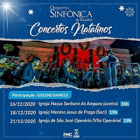

A Orquestra Sinfônica de Teresina nasceu em 1993, como projeto da prefeitura Municipal de Teresina através da Fundação Municipal de Cultura Monsenhor Chaves, com o nome de Orquestra de Câmara, e já em seus primeiros anos de existência construiu uma história de destaque no cenário musical Teresinense.
Por esse trabalho, tem sido considerada como um dos melhores grupos musicais do Nordeste do Brasil.
Sob liderança do maestro Aurélio Melo, regente de sólida e respeitada carreira em nosso estado, a Orquestra Sinfônica de Teresina já se apresentou em todas as regiões do Piauí e em alguns estados do Nordeste Brasileiro, levando o nome da nossa Capital e Estado, formando novos públicos, e democratizando o acesso à cultura.
Aplaudida por milhares de pessoas, a Orquestra apresenta ao público as obras consagradas do repertório sinfônico erudito e popular. Suas apresentações incluem séries no Palácio da Música, Concertos no Theatro 4 de Setembro, Concertos Didáticos nas escolas e turnês.
Desde sua primeira temporada a Sinfônica se apresenta regularmente nos principais eventos Culturais do Piauí e como ação de estímulo à música promove os compositores piauienses tocando seus arranjos e composições, atividade inédita no Piauí que abre nova oportunidade para talentos do nosso Estado.
A Orquestra Sinfônica de Teresina realiza um forte trabalho de popularização da música erudita através da execução de canções populares em arranjos para orquestra, em sua maioria, trabalho de seu próprio maestro, Aurélio Melo. Este trabalho vem rendendo grande resultado. Prova disto é o aumento considerável de sua plateia.
Desde 2016, a Orquestra Sinfônica de Teresina e a Dniederrheinische Sinfoniker, da Alemanha, vêm realizando um intercâmbio entre seus músicos, com o objetivo de trocar experiências e compartilhar o que cada uma tem de melhor.
O projeto começou com a ida do maestro Aurélio Melo e do percussionista Gilson Fernandes à cidade alemã Mönchengladbach, em janeiro de 2016, a partir do incentivo e contatos conquistados por Célia Bonfim, piauiense estudante de música radicada na Alemanha. Em outubro do mesmo ano, a OST recebeu a violinista ucraniana Tatjana Cherepashchuk. Em 2017, o alemão Dominik Lang esteve na capital trabalhando com os músicos da orquestra local. Em 2019, Lang retornou à Teresina, dessa vez, na companhia do violista Martin Böner.
O mês de dezembro é sempre bastante intenso para a Orquestra Sinfônica de Teresina (OST), que realiza concertos natalinos gratuitos por todos os cantos da capital piauiense.
Nesse ano de 2020 a música foi uma grande aliada para enfrentarmos as dificuldades que o coronavírus nos trouxe. Pensando nisso, a OST resolveu realizar os concertos natalinos e levar um pouco de esperança e luz.
Sem esquecer de nos adaptarmos ao momento, o repertório será todo para orquestra reduzida, apenas cordas e percussão, só serão quatro apresentações e é obrigatório o uso de máscaras e o distanciamento do público.
